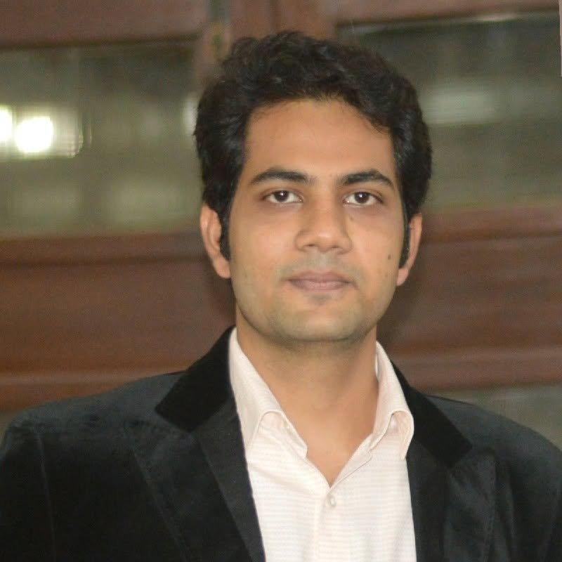
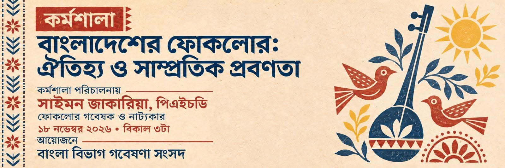
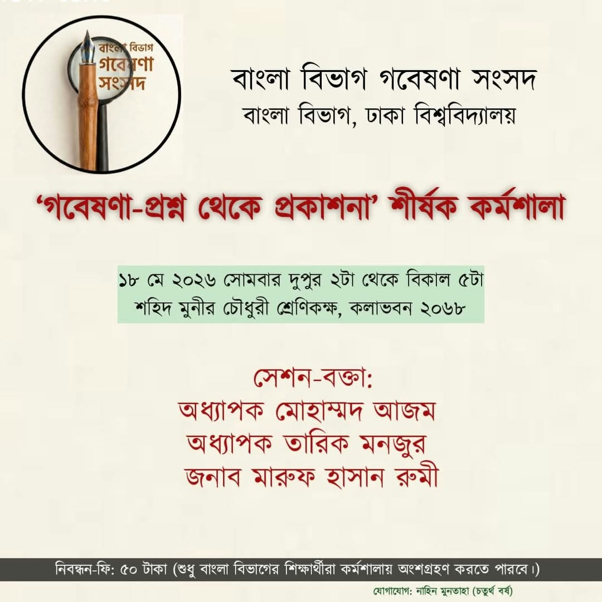

জ্ঞানচর্চা
বিষয়ভিত্তিক আলোচনা ও পাঠের ধারাবাহিক পরিসর।
বাংলা বিভাগ · ঢাকা বিশ্ববিদ্যালয়
শিক্ষার্থী, গবেষক ও অ্যালামনাইদের জন্য গবেষণা-পদ্ধতি, সাহিত্য, ভাষা ও সংস্কৃতিচর্চার একটি সহযোগিতামূলক মঞ্চ।
আমাদের পরিচয়
বাংলা বিভাগ গবেষণা সংসদ ঢাকা বিশ্ববিদ্যালয়ের বাংলা বিভাগের শিক্ষার্থী ও গবেষকদের জ্ঞানচর্চা, গবেষণা-দক্ষতা এবং সৃজনশীল সংলাপের পরিসর প্রসারিত করতে কাজ করে।
কর্মশালা, বক্তৃতা, পাঠচক্র, গবেষণা-উপস্থাপনা ও প্রকাশনার মধ্য দিয়ে আমরা বাংলা ভাষা-সাহিত্য ও সংস্কৃতির বহুমাত্রিক অনুসন্ধানকে উৎসাহিত করি।
বিষয়ভিত্তিক আলোচনা ও পাঠের ধারাবাহিক পরিসর।
গবেষণা-পদ্ধতি ও একাডেমিক লেখালেখির অনুশীলন।
শিক্ষার্থী, শিক্ষক, গবেষক ও অ্যালামনাইদের সংযোগ।
নেতৃত্ব ও পরিচালনা
বাংলা বিভাগ গবেষণা সংসদের মডারেশন পর্ষদ ও কার্যনির্বাহী পরিষদ
সহকারী অধ্যাপক, বাংলা বিভাগ · ঢাকা বিশ্ববিদ্যালয়

সহকারী অধ্যাপক, বাংলা বিভাগ · ঢাকা বিশ্ববিদ্যালয়
বাংলা বিভাগ · ঢাকা বিশ্ববিদ্যালয়
বাংলা বিভাগ · ঢাকা বিশ্ববিদ্যালয়
বাংলা বিভাগ · ঢাকা বিশ্ববিদ্যালয়
বাংলা বিভাগ · ঢাকা বিশ্ববিদ্যালয়
বাংলা বিভাগ · ঢাকা বিশ্ববিদ্যালয়
সাম্প্রতিক কর্মশালা

সেশন বক্তা
ফোকলোর গবেষক ও নাট্যকার
লোকঐতিহ্যের পাঠ থেকে সমকালীন গবেষণার নতুন প্রশ্ন ও পদ্ধতির সন্ধান।
আয়োজনের আলোকচিত্র
বাংলাদেশের ফোকলোরের ঐতিহ্য, লোকনাট্য ও সাম্প্রতিক গবেষণা-প্রবণতা নিয়ে সাইমন জাকারিয়া, পিএইচডির সেশন, অংশগ্রহণকারীদের প্রশ্নোত্তর এবং সমাপনী পর্বের কিছু মুহূর্ত।
১৮ নভেম্বর ২০২৬ · শহিদ মুনীর চৌধুরী শ্রেণিকক্ষছবিতে চাপ দিলে বড় করে দেখা যাবে।
অংশগ্রহণ
রেজিস্ট্রেশন সময়সীমা ছিল ৯–১৬ নভেম্বর ২০২৬। ভবিষ্যৎ আয়োজনের ঘোষণা জানতে আমাদের ফেসবুক পেজ অনুসরণ করুন।
বাংলা বিভাগ গবেষণা সংসদের নিবন্ধিত সদস্য
ঢাকা বিশ্ববিদ্যালয়ের বাংলা বিভাগের বর্তমান ও সাবেক শিক্ষার্থী
ঢাকা বিশ্ববিদ্যালয়ের অন্যান্য বিভাগের বর্তমান শিক্ষার্থী
যোগাযোগ
বাংলা বিভাগের বর্তমান শিক্ষার্থীরা নিজ নিজ ব্যাচ প্রতিনিধির সঙ্গে যোগাযোগ করবেন।
আমাদের কার্যক্রম
পদ্ধতি, তথ্যসংগ্রহ, ক্ষেত্রসমীক্ষা ও একাডেমিক লেখার হাতে-কলমে আয়োজন।
গুরুত্বপূর্ণ সাহিত্যকর্ম, তত্ত্ব ও গবেষণাপত্রকে ঘিরে নিয়মিত সংলাপ।
তরুণ গবেষকদের কাজ উপস্থাপন, প্রতিক্রিয়া ও সহকর্মী-পর্যালোচনার সুযোগ।
গবেষণাভিত্তিক লেখা, প্রতিবেদন ও জ্ঞানসম্পদ প্রকাশের পরিকল্পিত প্ল্যাটফর্ম।
আয়োজনের আর্কাইভ
বাংলা বিভাগ গবেষণা সংসদের কর্মশালা, আলোচনা ও গবেষণা-উপস্থাপনার তথ্য সময়ক্রমে এখানে সংরক্ষিত হচ্ছে।
সেশন-বক্তা সাইমন জাকারিয়া, পিএইচডি—ফোকলোর গবেষক ও নাট্যকার। সেশন, প্রশ্নোত্তর ও সমাপনী পর্বের ১৫টি আলোকচিত্র সংরক্ষিত হয়েছে।
আলোকচিত্র দেখুন
সোমবার · দুপুর ২টা–বিকাল ৫টা
শহিদ মুনীর চৌধুরী শ্রেণিকক্ষ, কলাভবন ২০৬৮